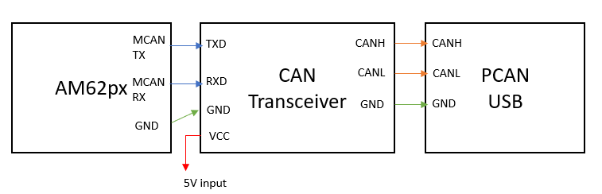

Introduction
This example shows usage of RP Message APIs to exchange messages between linux on cortex-A CPU and RTOS/NORTOS CPUs. This example also demonstrates the capability of MCAN receive event to wake the entire SOC in MCU Only low power mode.
In this example,
- We create two RP Message end points
- One end point to exchange messages with Linux kernel
- One end point to exchange messages with Linux user space and other RTOS/NORTOS CPUs
- All cores on startup after driver initialization first wait for Linux to be ready
- Then they
announce the end points on which they are waiting for messages to Linux.
- This is needed to be done else Linux cannot initiate message exchange with RTOS/NORTOS CPUs.
- In case of remotecores, suspend task is created to enable graceful suspend in low power mode.
- Two tasks are then created which listen for incoming messages and echo it back to the sender. The sender can be Linux CPU or other RTOS/NORTOS CPUs.
- Meanwhile Linux kernel and user space test applications initiate message exchange with RTOS/NORTOS CPUs and wait for the echoed message.
- This example provides support for graceful shutdown of the remote core (MCU R5F). Refer Graceful shutdown of remote cores from Linux
- This example provides support for MCU only low power mode support on the MCU core (MCU R5F)
- This example provides support for other low power modes on the remote core (MCU R5F)
The example integrates bootloading functionality with SBL on OSPI bootmedia. It also integrates Device manager functionality. The SBL stage 2 thread boots all the cores along with HLOS like Linux. Refer SBL Booting Linux From OSPI for boot flow sequence.
In MCU Only low power mode, CAN message receive is used as an event to wake the SoC from low power mode. This is tested using communication to an external CAN controller using a PCAN-USB (from PEAK Systems : IPEH-004022) with the following configuration.
- CAN FD Message Format
- Bit rate switch enabled
- Message ID Type is Standard with Msg Id 0xC0
- MCAN is configured in Interrupt Mode
- MCAN Interrupt Line Number 0
- Nominal Bit Rate 1Mbps
- Data Bit Rate 5Mbps
- Buffer mode is used for RX to store message in message RAM.
The MCAN module is programmed to receive a CAN message from the external CAN controller connected via a PCAN-USB.
Supported Combinations
| Parameter | Value |
| CPU + OS | mcu-r5fss0-0 freertos |
| Toolchain | ti-arm-clang |
| Board | am62px-sk |
| Example folder | examples/lpm/lpm_mcu_mcan_wakeup |
Steps to Run the Example
- Hardware Connectivity, connect the PCAN-USB module to PC from USB and Serial Port. The SoC supports CAN-FD, but it is required to connect an external CAN-FD transceiver to the EVM to test the full functionality of CAN. For testing, https://www.ti.com/tool/TCAN1042DEVM transceiver has been used. The connections need to be done as shown in the image below.

MCAN Hardware Connectivity with transceiver and PCAN USB.
- Software Setup, Download and Install the PCAN-View from https://www.peak-system.com/PCAN-View.242.0.html?&L=1
- Click on CAN in the menu bar and connect to PCAN-Usb. Set Mode as ISO CAN FD, Sample point under Nominal Bit Rate as 70 percent, Bit Rate (kbit/s) as 1000, Sample Point under Data Bit Rate as 62.5 percent and Bit Rate(kbit/s) as 5000. Leave the rest as default.
- The data can now be sent to MCAN instance using PCAN-View.
- This example integrates SBL on OSPI bootmedia which needs to be flashed on the EVM flash, along with sample application images for MCU R5 CPUs, HSM M4F and Linux Appimage.
- For HS-FS device, use default_sbl_ospi_linux_hs_fs.cfg as the cfg file.
- To flash to the EVM, refer to Flash a Hello World example .
- Example, assuming SDK is installed at
C:/ti/mcu_plus_sdk and this example and IPC application is built using makefiles, and Linux Appimage is already created, in Windows, cd C:/ti/mcu_plus_sdk/tools/boot
python uart_uniflash.py -p COM13 --cfg=C:/ti/mcu_plus_sdk/tools/boot/sbl_prebuilt/am62px-sk/default_sbl_ospi_linux_hs_fs.cfg
- If Linux PC is used, assuming SDK is installed at
~/ti/mcu_plus_sdk cd ~/ti/mcu_plus_sdk
python uart_uniflash.py -p /dev/ttyUSB0 --cfg=~/ti/mcu_plus_sdk/tools/boot/sbl_prebuilt/am62px-sk/default_sbl_ospi_linux_hs_fs.cfg
- Switch to OSPI NOR BOOT MODE and power on the EVM.
MCU only LPM
- Attention
- Low power mode is supported only on the Linux SPL boot flow. SBL bootflow does not support low power mode (LPM)
The following steps shows how to run MCU-only low power mode.
- Set the wake up resume latency as 100ms for CPU0 on the linux kernel by running the following command. When the resume latency value is less, suspending the kernel will go to
MCU only sleep mode.
$ echo 100000 > /sys/devices/system/cpu/cpu0/power/pm_qos_resume_latency_us
- Go to MCU only low power mode by running the following command on the linux.
$ echo mem > /sys/power/state
- After this, the following message will appear on the MCU UART.
Next MCU mode is 1
Suspend request to MCU-only mode received
Send MCAN packet to resume the the kernel from MCU only mode
- Then, send MCAN packet to resume the kernel from LPM.
MCAN event detected. Notifying DM to wakeup main domain
Main domain resumed due to MCU MCAN
See Also
IPC RPMessage
Sample Output
There is no direct output from the RTOS/NORTOS CPUs on the UART or CCS console. The output is seen on the Linux console on Cortex-A CPU.
 1.8.20
1.8.20